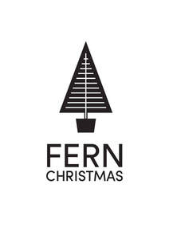
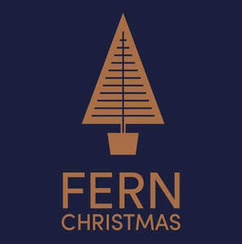
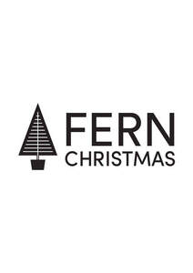
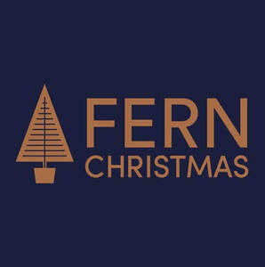
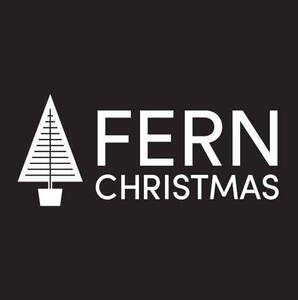
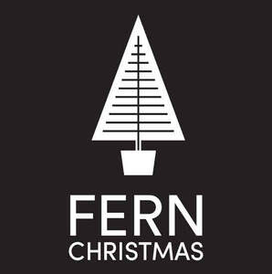

Trade Mark Journal No.2025/037 12 September 2025
UK00004255320 27 August 2025 (3,4,11,16,24,26,28,35)
Mark 1

Mark 2

Mark 3

Mark 4

Mark 5

Mark 6

- Class 3
- Toiletries; room fragrances; pot pourri; soap; hand cream; body cream; hand wash; bath soaps; bath oils; lotion; household fragrances; fragrances; toiletries gift set comprising of hand creams and body creams.
- Class 4
- Candles; scented candles; outdoor candles; home candles; indoor candles; Christmas tree candles; tealight candles; table candles; candles containing insect repellent; wood pellet fuel; lighter cubes; wood chips.
- Class 11
- Lighting; Christmas decorations; outdoor lighting; indoor lamps; table lamp; lanterns; garden lighting; bulbs for lighting; decorative lighting; garden lighting; Christmas lighting; lanterns; infinity lights; window lights; solar wall lights; lamp stand.
- Class 16
- Paper garlands; wall decorations; gift cards; gift bags; gift vouchers; note pads; greetings cards; holiday cards; Christmas cards; birthday cards; cards; journal; notebook; gift box; labels of cardboard or paper.
- Class 24
- Throws; bedding; blankets; outdoor blankets; picnic blankets; linens; outdoor furniture cover; tea towel.
- Class 26
- Flower wreaths; Christmas decorations; artificial plants; artificial trees; artificial flowers; Christmas wreath; artificial foliage; garlands.
- Class 28
- Christmas tree ornaments; Christmas tree skirts; toy Christmas trees; artificial Christmas trees; Christmas tree stands; Christmas tree; Christmas decorations; tinsel; teddy bears; soft toys; toys; dolls; jigsaws; games; playthings; puzzles; toys for pets; plastic toys; toys for infants; educational toys; Christmas themed toys namely soft toys, dolls, jigsaws, puzzles and plastic toys; illuminated figures; ceramic tree decorations; infant toys; roleplay toys; craft model kits; toy model kits; dog toys; cat toys.
- Class 35
- Online retail store services in connection with horticultural products, furniture, furnishings, clothing, footwear, headwear, pet products, cookware, gardening products, toiletries, pet food, candles, lighting, gift cards, household or kitchen utensils, blankets, artificial plants, Christmas decorations, rugs and mats, toys, animal food and seed, plants, bulbs and seeds; retail store services in connection with horticultural products, furniture, furnishings, clothing, footwear, headwear, pet products, cookware, gardening products, toiletries, pet food, candles, lighting, gift cards, household or kitchen utensils, blankets, artificial plants, Christmas decorations, rugs and mats, toys, animal food and seed, plants, bulbs and seeds, food, confectionary, delicatessen products.
Woodthorpe Hall Garden Centres Limited
Representative: Wilkin Chapman Rollits